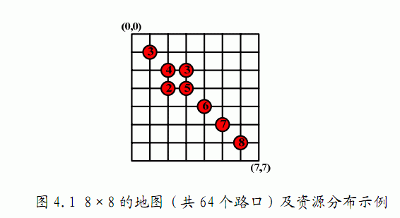

在野外生存中，以最快、最省力的方式收集必要的生存资源是必须的。在这 次生存训练的尾声，给队员们的最后考核就是收集资源竞赛，要求队员们在限定 时间内收集到最多的资源。小龙抽到的地图是震后城市生存资源收集模拟，教官 为小龙发了一张地图，地图上的南北和东西方向各有N条间距相等的街道，如果 街道的交叉点即路口上标注着红点和数字，这代表该路口有一定量的资源可以收 集（如图4.1），否则表示该路口没有资源。小龙决定利用赛前准备时间好好研 究一下行走路线，根据地图上的比例尺提示，他知道从模拟城市的一个路口走到 临近的下一个路口，大概需要1分钟，而需要收集的资源就放在路口中心，拿起 来就可以继续行进，因此，行走需要时间，而收集资源的时间是可以忽略不计的。 请为小龙设计一个行走方案，使得他在限定时间内能收集到最多的资源。
